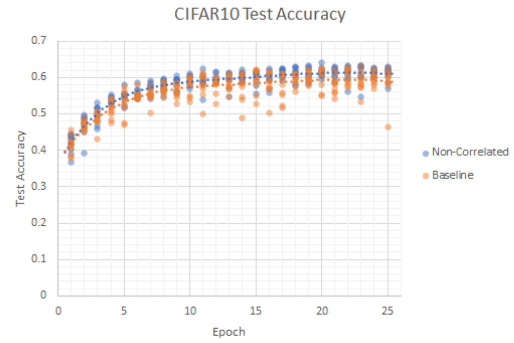
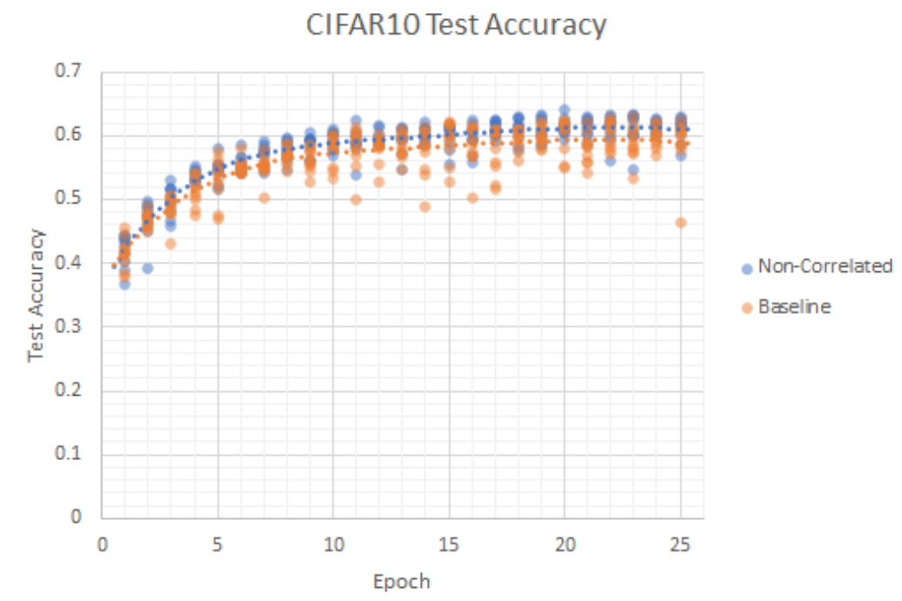

Team Members: Preston Lee, Ryan Park
Overview
In machine learning, ensemble methods are techniques that are applied to algorithms that can provide more meaningful data points or even more accurate results. For example, algorithms such as logistic regression and naïve bayes may be used to predict a certain outcome, but we could potentially combine these algorithms together as some sort of aggregation. Or, we could train an algorithm on subsets of data and combine the results together. For the purpose of this project, we wanted to take a look into the dropout technique. Similar to the methods just mentioned, dropout is an ensemble technique to regularize neural networks. As there has been less research that has been done on the effect of model diversity within dropout, we wanted to do more research and experimentation on this for our final project. In our project, we will attempt to both explore the benefits/disadvantages of output diversity on a neural network outputs as well as find a scheme to enforce dropout diversity for better regularization in neural networks. We will conduct experiments on MNIST and CIFAR10 to compare diverse dropout vs. vanilla dropout.
Datasets
Our data set consist of MNIST and CIFAR10. MNIST is a database consisting of 60,000 training images and 10,000 testing images of hand written digits from 0-9. More information about this can be found on its wiki page: MNIST Database. Cifar-10 is a database consisting 60,000 32x32 images of 10 different classes including objects such as airplanes, cars, birds, etc. More information about this dataset can be found on its wiki page: CIFAR-10 Database
.Previous Work
To get more insight on ensemble and how to improve our machine learning models, we searched for online resources. We found the following article Deep Neural Network Ensembles against Deception: Ensemble Diversity, Accuracy and Robustness to give a detailed breakdown to what ensemble is and how we can use techniques to strengthen our hypothesis and models. Furthermore, it also dives deep into math topics that explain how ensemble accuracy can be increased and what methods we can rely on to help us understand our data. For our code, we utilized pytorch and its neural network and adversarial testing libraries to help us with our project.
Our Approach
Our code is located on the following github page Dropout Diversity
Results
We compiled the following graphs and data points:

 


Discussion
One technique that we were also thinking about working on was the stacking technique, which combines multiple different kinds of machine learning algorithms to create a polished model or analyze the similarities and differences to conclude which models and data we can rely on the most, as there is freedom and lots of variation when it comes to defining parameters in machine learning problems.
Video
YOUTUBE